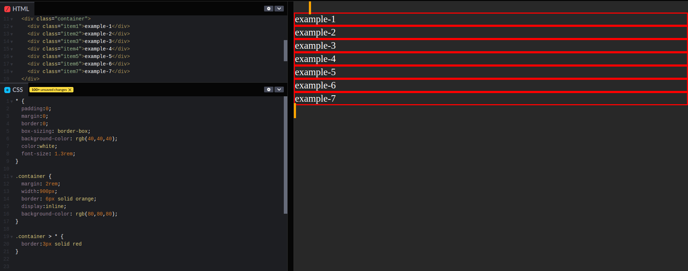
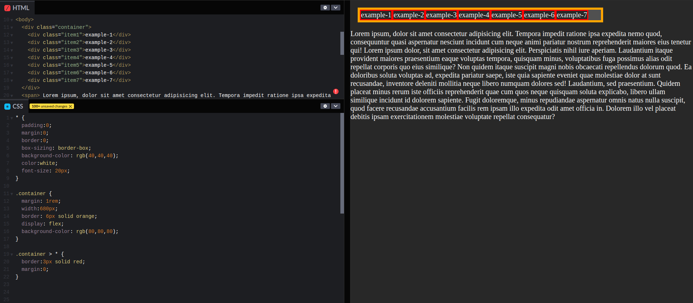
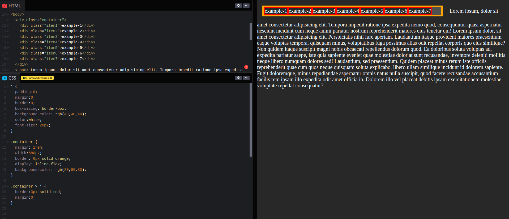
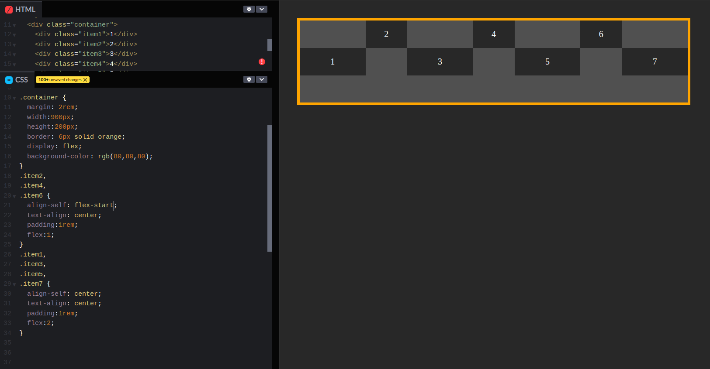
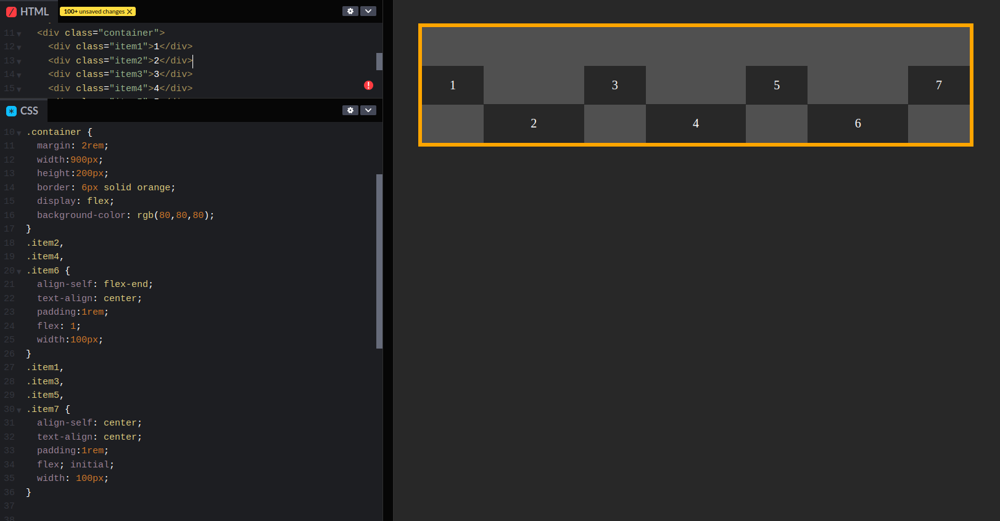

Este é um modo de layout que oferece uma alternativa para floats para definir a aparência geral de uma página da web. Enquanto o 'float' nos permite apenas posicionar nossas caixas horizontalmente, flexbox nos dá controle total sobre o alinhamento, direção, ordem e tamanho de nossas caixas.
Você pode alterar o tipo de exibição interna, por exemplo, definindo display:flex, o elemento ainda usará o tipo de exibição externa block, mas isso altera o tipo de exibição interna para flex. Quaisquer filhos diretos desta caixa se tornarão itens flexíveis e se comportarão de acordo com a especificação flexbox.
Em geral, você pode definir vários valores para o tipo de exibição usando a propriedade display, que pode ter vários valores:
A caixa irá quebrar em uma nova linha:
A caixa não irá quebrar em uma nova linha:

A caixa não quebrará em uma nova linha, dando a ela um valor de flex, estamos dizendo ao navegador que tudo na caixa deve ser renderizado como flexbox em vez do modelo de caixa padrão:
Não há efeitos no contêiner de itens flexíveis, é o mesmo que display:flex, mas a diferença é que o contêiner de bloco é considerado nível inline agora. Você não pode exibir flex items embutidos; caso contrário, você não terá um layout flexível. :
A propriedade flex define a largura de itens individuais em um flex container, permitindo que eles tenham larguras flexíveis. Ele funciona como um peso que informa ao flex container como distribuir o espaço extra para cada item. Por exemplo, um item com um valor flex de 2 crescerá duas vezes mais rápido que itens com o valor padrão de 1.
Podemos até misturar e combinar caixas flexíveis com outras de largura fixa. flex: initial retorna para a propriedade width explícita do item. Isso nos permite combinar caixas estáticas e flexíveis de maneiras complexas.
Sem essa linha flex:initial, a declaração flex: 1; seria herdada da regra .footer-item, causando com que as propriedades de width sejam ignoradas. initial corrige isso e obtemos um layout flexível que também contém itens de largura fixa.